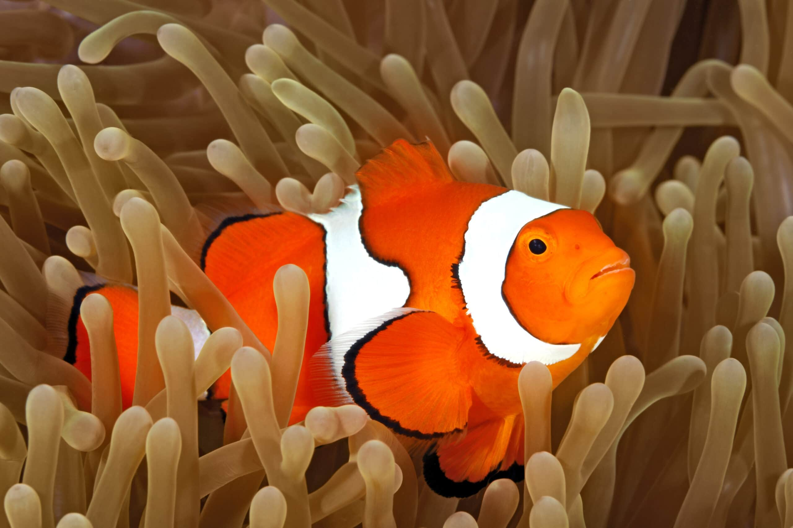
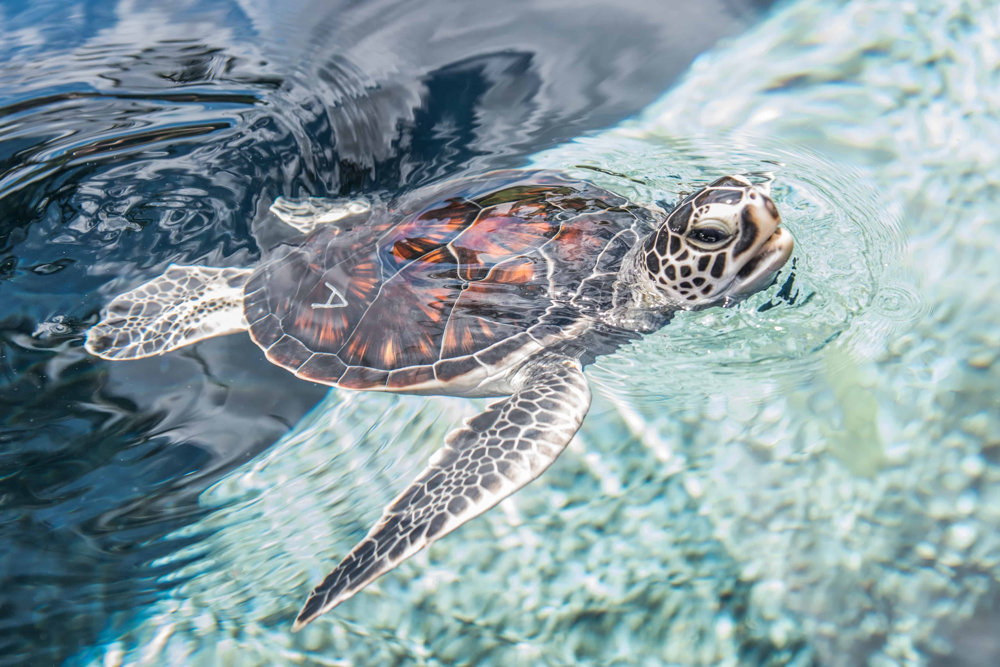
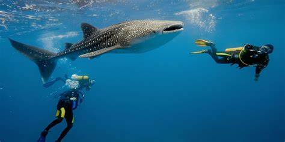
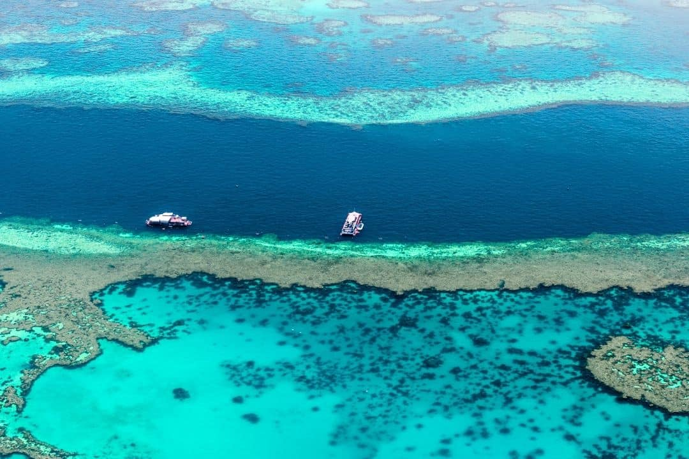

Discover the Diverse Underwater World
The Great Barrier Reef is one of the most famous and biologically diverse marine ecosystems in the world. With over 1,500 species of fish, 400 types of coral, and unique marine creatures, the reef is a must-see destination for divers.
Some of the Iconic Aquatic Life

Clownfish

Sea Turtle

Whale Shark
Other Incredible Species
- Great White Sharks
- Coral Trout
- Sea Snakes
- Giant Clams
- Various species of Rays and Manta Rays
Stunning Underwater Photography
A glimpse of the vast expanse of the reef, with vibrant corals and marine life teeming all around.